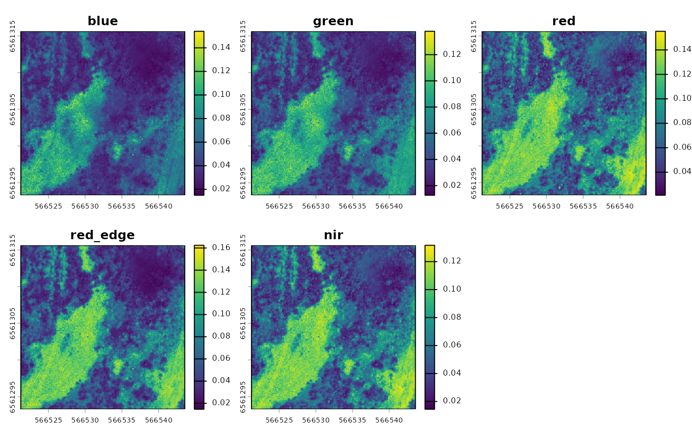

Create a multiband image from single-band TIF files
Source:R/create_multiband_image.R
create_multiband_image.RdThis function combines single reflectance band TIF files into a multiband image. It saves the combined multiband image to a file and, by default, also returns it and plots it for checking. Bands are ordered by the specified wavelength order. All bands in a folder must share the same extent, resolution and coordinate reference system (CRS); otherwise the function stops and lists the bands that differ.
Usage
create_multiband_image(
input_dir,
desired_band_order,
output_dir = tempdir(),
make_plot = TRUE,
return_raster = TRUE
)Arguments
- input_dir
A directory containing folders with waveband TIF files to be combined, or a single folder with waveband TIF files to be combined.
- desired_band_order
A character vector of band names, in wavelength order. Each band is matched to the TIF whose file name (excluding extension) is the band name or ends with it after a separator, so both
blue.tifand Pix4D output such asNSABHC0009_transparent_reflectance_blue.tifmatch"blue". Matching ignores case, and treats spaces, hyphens and dots as underscores ("red edge"matches"red_edge"). Other TIFs in the folder are ignored. The output layers are named by these band names.- output_dir
A directory where the combined multiband TIF file will be saved.
- make_plot
Logical. If
TRUE, a plot is generated to visualize the output for verification. Default isTRUE.- return_raster
Logical. If
TRUE, the combined raster object is returned. Default isTRUE.
Value
Saves a combined multiband TIF file in the specified output_dir.
If return_raster = TRUE (default), the function also returns the combined
multiband image as a terra raster, or a named list of rasters when
input_dir holds several folders.
Examples
input_dir <- system.file("extdata/create_multiband_image", package = "saltbush")
output_dir <- tempdir()
create_multiband_image(input_dir, c('blue', 'green', 'red', 'red_edge', 'nir'), output_dir)

#> class : SpatRaster
#> size : 245, 245, 5 (nrow, ncol, nlyr)
#> resolution : 0.09114, 0.09114 (x, y)
#> extent : 566521.2, 566543.6, 6561293, 6561316 (xmin, xmax, ymin, ymax)
#> coord. ref. : WGS 84 / UTM zone 54S (EPSG:32754)
#> sources : blue.tif
#> green.tif
#> red.tif
#> ... and 2 more sources
#> names : blue, green, red, red_edge, nir
#> min values : 0.01499, 0.012692, 0.021194, 0.014687, 0.014483
#> max values : 0.154005, 0.137811, 0.155227, 0.162395, 0.131662